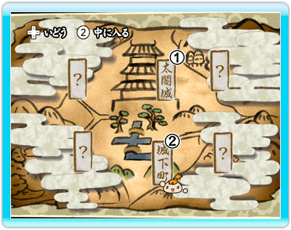

10 |
画面の種類 |
 |

エリアマップでAボタンを押すとこの画面が表示されます。この画面では、6つのエリアを行き来することができます。十字ボタンでエリアを選択し、2ボタンを押してそのエリアに入ります。雲がかかっている場所は、その時点では入れないエリアになります。
（画像は初期のワールドマップです。物語の進行に合わせてエリアは開放されます） |
||||||||||||||||||||||||||||||||||||||||||||||
カーソルを移動させて物語を進めます。あやしい場所で2ボタンを押すと、反応が返ってきます。
検地で使用する作物の情報を得たり、道具を入手することがあります。
|
||||||||||||||||||||||||||||||||||||||||||||||
カヨを操作して、検地の成功を目指す画面です。
|
 |
 |
 |